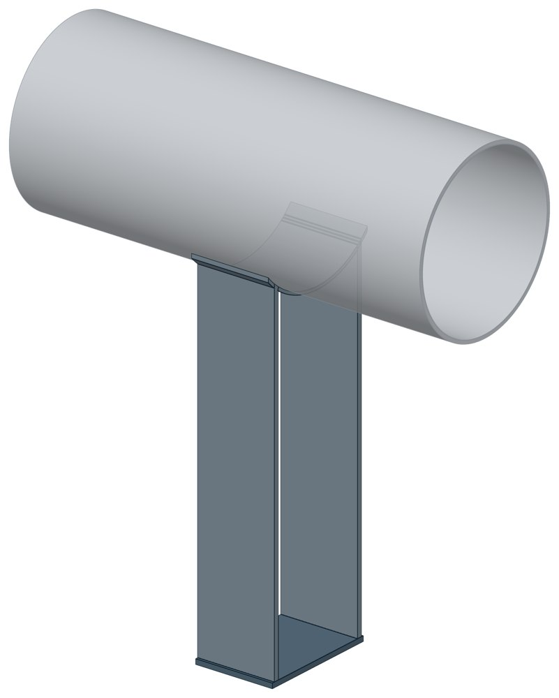

Крепление горизонтального газопровода УКГ 12.00
Серия 5.905-18.05. Dн 273–1020 мм, масса 19,2–69,87 кг.

- Диаметр трубы Dн
- 273–1020 мм
- Документ
- Серия 5.905-18.05
- Исполнений
- 15
- Масса
- 19,2–69,87 кг
- 3D-модели
- у всех исполнений (условные: общий вид по габаритам)
Таблица исполнений УКГ 12.00
| Обозначение | Код ПРОМБУРГ | Думм | Нмм | Массакг | 3D |
|---|---|---|---|---|---|
| УКГ 12.00 | ПБ-УКГ12-0273-1 | 250 | 600 | 19,28 | 3D |
| УКГ 12.00-01 | ПБ-УКГ12-0273-2 | 250 | 700 | 20,88 | 3D |
| УКГ 12.00-02 | ПБ-УКГ12-0273-3 | 250 | 800 | 22 | 3D |
| УКГ 12.00-03 | ПБ-УКГ12-0325-1 | 300 | 600 | 19,2 | 3D |
| УКГ 12.00-04 | ПБ-УКГ12-0325-2 | 300 | 700 | 20,65 | 3D |
| УКГ 12.00-05 | ПБ-УКГ12-0325-3 | 300 | 800 | 22 | 3D |
| УКГ 12.00-06 | ПБ-УКГ12-0426-1 | 400 | 800 | 37,17 | 3D |
| УКГ 12.00-07 | ПБ-УКГ12-0426-2 | 400 | 1000 | 42,07 | 3D |
| УКГ 12.00-08 | ПБ-УКГ12-0530-1 | 500 | 800 | 36,87 | 3D |
| УКГ 12.00-09 | ПБ-УКГ12-0530-2 | 500 | 1000 | 41,77 | 3D |
| УКГ 12.00-10 | ПБ-УКГ12-0630-1 | 600 | 800 | 52,65 | 3D |
| УКГ 12.00-11 | ПБ-УКГ12-0630-2 | 600 | 1000 | 60,35 | 3D |
| УКГ 12.00-12 | ПБ-УКГ12-0820-1 | 800 | 800 | 58,45 | 3D |
| УКГ 12.00-13 | ПБ-УКГ12-0820-2 | 800 | 1000 | 66,95 | 3D |
| УКГ 12.00-14 | ПБ-УКГ12-1020-1 | 1000 | 1000 | 69,87 | 3D |
Чтобы заказать, сообщите обозначение и код ПРОМБУРГ: +7 (499) 325-51-35, promburg@yandex.ru.
Нормативные документы
- Серия 5.905-18.05 Узлы и детали крепления газопроводов — документ, по которому изготавливается изделие
На трубу Dн 273–1020 мм в каталоге
Позиции каталога с исполнениями на те же наружные диаметры трубы.
Детали трубопровода
- Отвод стальной крутоизогнутый 90° общих Dн: 7
- Фланец стальной воротниковый общих Dн: 7
- Фланец стальной плоский приварной общих Dн: 7
- Отвод стальной крутоизогнутый 90°, 09Г2С общих Dн: 6
- Днище стальное эллиптическое общих Dн: 5
- Заглушка стальная эллиптическая общих Dн: 5
- Переход стальной концентрический общих Dн: 4
Компенсаторы
- Компенсатор сильфонный 2ОПКР общих Dн: 7
- Компенсатор сильфонный 2ОПКР (ИЯНШ) 2ОПКРИ общих Dн: 7
- Компенсатор сильфонный 2СКУ.М 2СКУМ общих Dн: 7
- Компенсатор сильфонный 2СКУ.М (ИЯНШ) 2СКУМИ общих Dн: 7
- Компенсатор сильфонный 2СКУ.ППМ 2СКУППМ общих Dн: 7
- Компенсатор сильфонный 2СКУ.ППМ (ИЯНШ) 2СКУППМИ общих Dн: 7
- Компенсатор сильфонный 2СКУ.ППУ 2СКУППУ общих Dн: 7
- Компенсатор сильфонный 2СКУ.ППУ (ИЯНШ) 2СКУППУИ общих Dн: 7
- Компенсатор сильфонный 2СКУ.ППУ/ОЦ (ИЯНШ) 2СКУППУОЦИ общих Dн: 7
- Компенсатор сильфонный КС общих Dн: 7
- Компенсатор сильфонный КСО общих Dн: 7
- Компенсатор сильфонный КСО (ИЯНШ) КСОИ общих Dн: 7
- Компенсатор сильфонный КСОФ общих Dн: 7
- Компенсатор сильфонный ОПКР общих Dн: 7
И ещё 15 типов — в оглавлении каталога.
Другие опоры и подвески
- Опора неподвижная двухупорная ТС-660 общих Dн: 7
- Опора неподвижная четырёхупорная ТС-661 общих Dн: 7
- Опора неподвижная двухупорная усиленная ТС-663 общих Dн: 7
- Опора неподвижная щитовая ТС-666 общих Dн: 7
- Опора неподвижная боковая ТС-668 общих Dн: 7
- Опора неподвижная хомутовая бескорпусная ТС-669 общих Dн: 7
- Опора скользящая приварная ТС-624 общих Dн: 7
- Опора скользящая хомутовая ТС-626 общих Dн: 7
- Опора катковая двухъярусная ТС-628 общих Dн: 7
- Опоры сварных отводов ТС-631 общих Dн: 7
И ещё 86 типов — в оглавлении каталога.
Другие типы раздела
Крепления газопроводов (УКГ, УГ, серия 5.905-18.05)
- Опоры хомутовые УГ 15-01-00
- Узлы крепления газопровода УКГ 1.00
- Опора, узел крепления газопровода УКГ 2.00
- Крепление газопровода УКГ 3.00
- Крепление горизонтального газопровода УКГ 4.00
- Крепление горизонтального газопровода УКГ 5.00
- Крепление вертикального газопровода УКГ 6.00
- Крепление горизонтального газопровода УКГ 7.00
- Крепление горизонтального газопровода УКГ 8.00
- Крепление вертикального газопровода УКГ 9.00
- Крепление горизонтального газопровода УКГ 10.00
- Крепление газопровода УКГ 11.00
- Крепление вертикального газопровода УКГ 13.00
- Крепление газопровода УКГ 14.00
- Крепление газопровода УКГ 15.00
- Опоры неподвижные УКГ 16.00
- Подвески с одной тягой УКГ 17.00
Частые вопросы
По какому диаметру подбирать — Dн или Ду?
По наружному диаметру трубы Dн: именно он стоит в таблицах серии. Ду — условный проход, округлённая величина: Ду 100 соответствует Dн 108. В заявке указывайте Dн и толщину стенки трубы.
Из какой стали изготавливаются опоры?
По рабочим чертежам серии листовые детали — Ст3сп5 ГОСТ 14637-89, хомуты из круга — сталь 20 ГОСТ 1050-88. Для районов с низкой расчётной температурой воздуха применяется низколегированная сталь, в том числе 09Г2С; размеры опор при этом не меняются. В заявке укажите расчётную температуру наружного воздуха.
Почему часть поверхностей опоры не окрашена?
Поверхности под приварку к трубе и к несущей конструкции оставляют без краски, иначе шов получится некачественным. Их консервируют смазкой, которую снимают перед сваркой.
Что указать в заявке, чтобы получить цену без уточнений?
Обозначение с номером исполнения или код ПБ, количество, Dн и стенку трубы, расчётную температуру наружного воздуха, покрытие, город доставки и желаемый срок. Кнопка «В заявку» в таблице собирает спецификацию, которую можно выгрузить в Excel или отправить письмом.